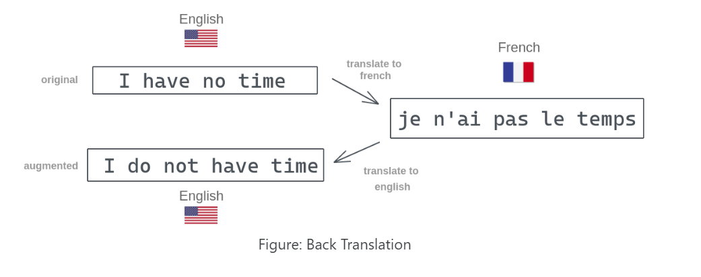
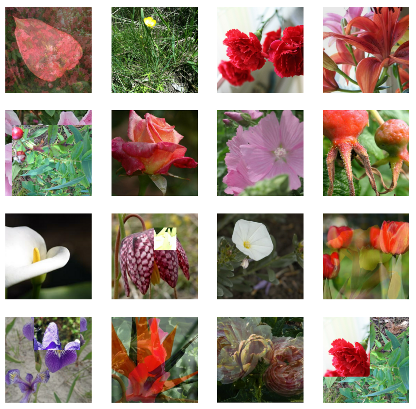
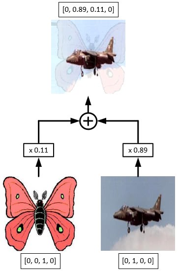
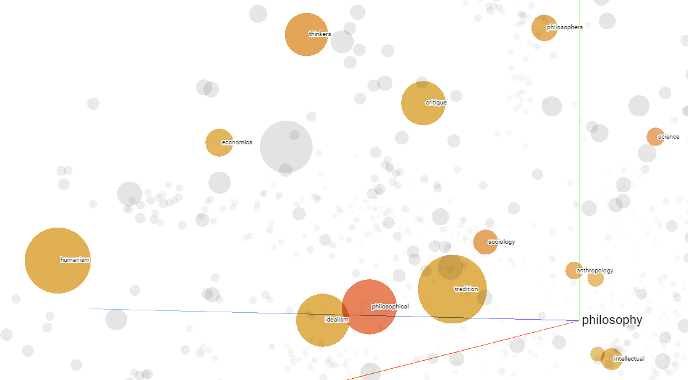
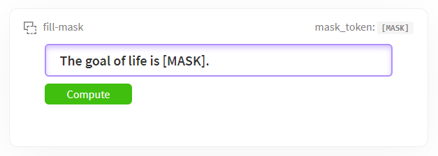

Seq2Seq for RNA Degredation Prediction
mRNA vaccines are prime candidates for COVID-19, but they have a tendency to spontaneously degrade, which is a concern because a single ‘cut’ can render a mRNA vaccine useless. To improve the stability of these mRNA vaccines, we can leverage data science techniques to develop models/rules to predict the degradation rates at each base of an RNA molecule.
Project Overview
 Before this project, I had never been exposed to sequence to sequence modeling. This project allowed me to extend my knowledge of sequentially-formatted data into the purview of biology and to further develop my understanding of recurrent neural networks and transformers. In the end, the so-called 'graph transformers' ended up defeating the simple sequence2sequence models, but the RNNs seemed to perform well when predicting on RNA sequences less than 70 bases long.
Before this project, I had never been exposed to sequence to sequence modeling. This project allowed me to extend my knowledge of sequentially-formatted data into the purview of biology and to further develop my understanding of recurrent neural networks and transformers. In the end, the so-called 'graph transformers' ended up defeating the simple sequence2sequence models, but the RNNs seemed to perform well when predicting on RNA sequences less than 70 bases long.
Multilingual Textual Entailment with RoBERTa
Using RoBERTa, you can train a transformer to classify pairs of sequences (premises/hypothesis pairs) into three classes: entailment, contradiction, neutral. With XLM-RoBERTa, you can do the same, but in 100 different languages. In this project, I use techniques based on Google translate to generate additional samples for training augmentation and test time augmentation. The current model is able to classify over 5,000 premise/hypothesis pairs in 15 different languages with an accuracy above 80%.
Project Overview
In computer vision, it is standard practice to use image augmentation techniques, but this is not the case in NLP. This is because it is hard to find small transformations we can apply to sentences that do not drastically change their meaning. There are some options, like randoming swapping words with their synonyms or randomly swapping words, but these can still produce incoherent sentences.
Another thought is to use Google translate to map sentences to different languages and back to their original, as demonstrated in the photo. You can try this out yourself: it consistently changes the words and length of sentences while preserving its semantic structure. We can generate even more complex transformations by chaining together random mappings to different languages before translating back to the original language. This technique can also be used to fix class imbalances through upsampling and for TTA by generating multiple test datasets.
Text Generation with GPT-2
Using TensorFlow and the popular NLP library HuggingFace, you can easily import pre-trained Transformer models that have been trained to predict words, allowing them to generate text. The current leading model is GPT-2: a model with over 1.5 billion parameters that has been trained on over 8 million web pages. In this project, I demonstrate its performance and how to use different sampling techniques to increase the coherence of generated text.
Project Overview
 The full sized GPT-2 model is actually not available as the creators were concerned about 'malicious applications of the technology', but there are other sized models available for enthusiants to play with - the largest you can use is 774 million parameters, which is the one used in this project.
The full sized GPT-2 model is actually not available as the creators were concerned about 'malicious applications of the technology', but there are other sized models available for enthusiants to play with - the largest you can use is 774 million parameters, which is the one used in this project.
The model is able to generate fascinating texts when prompted with intriguing inputs - for example, when fed the input: "Legolas and Gimli advanced on the orcs, raising their weapons with a harrowing war cry.", the generated output is:
Legolas and Gimli advanced on the orcs, raising their weapons with a harrowing war cry. A large, hairy orc with a long neck stood in their way, roaring in a powerful, guttural tongue.
The hobbits cried out in alarm and hobbits-in-training shouted in relief. There was a pause as they considered the situation, then Gimli, Aragorn, and Legolas turned around to face the orc and began to run toward it.
"Aragorn!" yelled Gimli. "I want to know what is happening."
Aragorn took up the torch in his left hand and thrust it toward the orc. A massive axe appeared out of nowhere and smashed the orc's head...
Transfer Learning on TPU
In this project, I test different CNN backbones and augmentation techniques to classify images of flowers as 104 different classes. To do so, I relied on tensor processing units (TPUs) and the built in TPU datapipelines available through TensorFlow.
Project Overview
For larger datasets that are several gigabytes or more, standard CPU/GPU training takes too long when performing complex image classification tasks, so you need to use Tensor Processing Units (TPUs) - hardware accelerators specifically designed for deep learning tasks. After performing the required TPU specific configuration steps, it is then easy to use advanced image augmentation techniques like CutMix and mixup (shown in images) to further improve model performance.
Keras makes it easy to import popular pre-trained models and their pre-trained weights, so all that remains is to re-purpose them for for your own task by definining a custom learning rate callback to fine tune the pre-trained weights. The final blended model has been tested on two datasets: 96% f1-score when tested on classifying 7,000 images of flowers into 104 types; 94% ROC AUC when tested on 10,000 images of moles for melanoma presence. So far, the model has been able to train on over 130GBs in one session, thanks to the power of TPUs.
Sentiment Extraction with RNNs and Transformers
Here, I experiment with different types of sequential neural network architectures to build a model capable of tagging Tweets that are about real natural disasters. After engineering new features, testing different word embeddings and network architectures, the model attains an accuracy above 84% (F1 score) on a 3000 Tweet unseen test set. The current project explores LSTMs, GRUs, and transformer models like BERT and XLNet.
Project Overview
You can use a simple algorithm like Logistic Regression to classify text data by simply treating words as features and one hot encoding them. This produces vectors that are populated with mostly 0s and all words are orthogonal to eachother, so the model thinks no words are similar in meaning. A better approach is to use word embeddings, like Word2Vec or GloVe, which are word vector spaces designed such that words with similar meaning are clustered together.
You can use a more complex model like a LSTM or GRU to help with remembering long-term information, which is important when we have longer sentences where the context of a word later in the sentence might be defined by a word at the very beginning of the sentence. You can also import much larger models that have their own encoding schemas easily with the HuggingFace library like BERT (and its many variants).